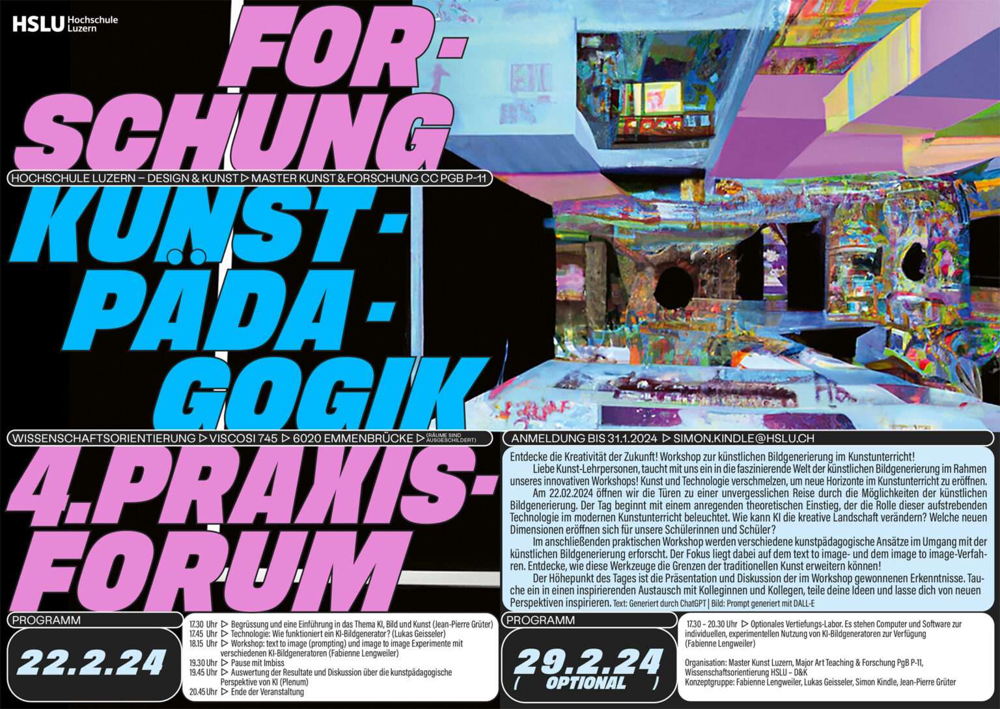
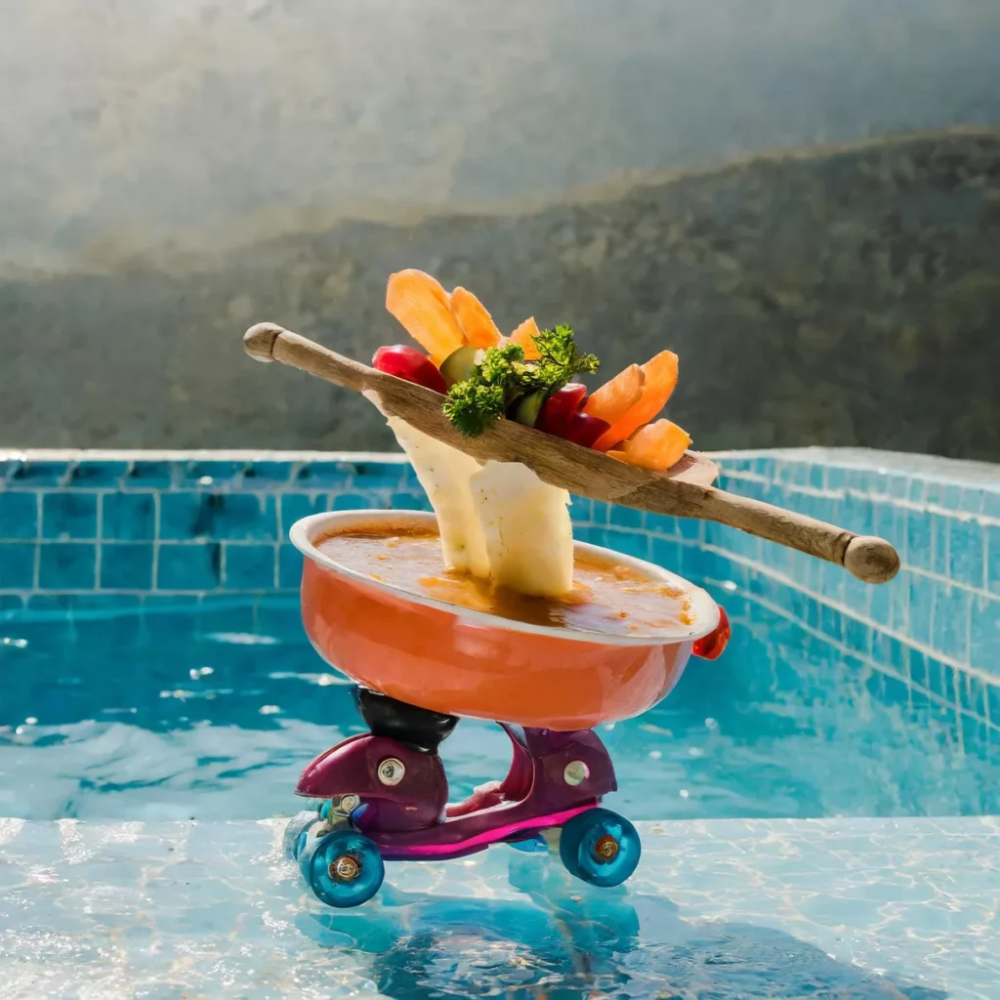
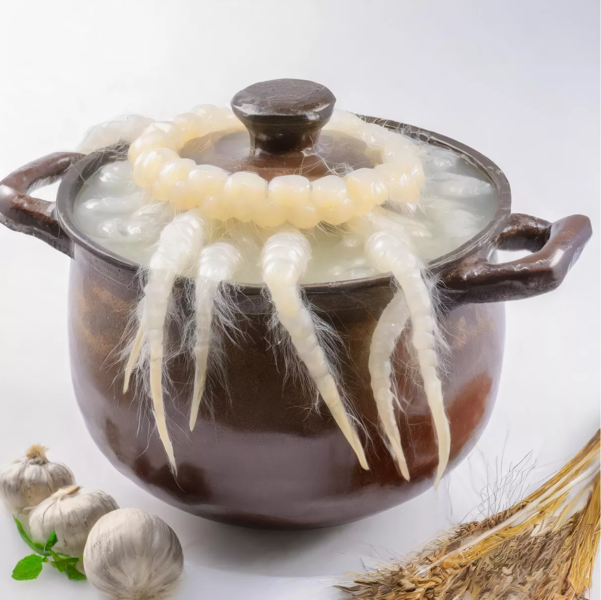
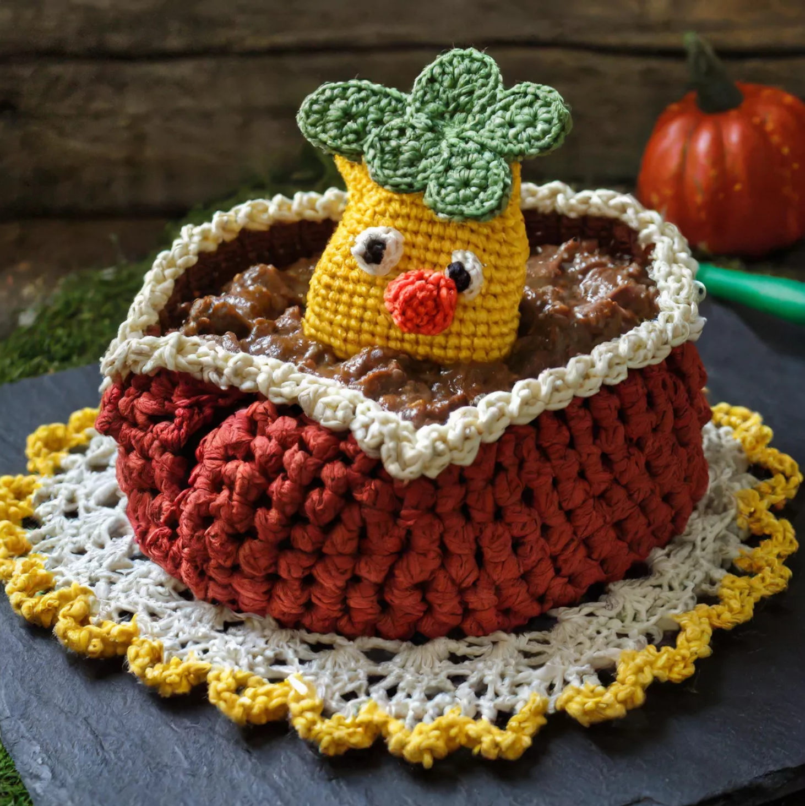
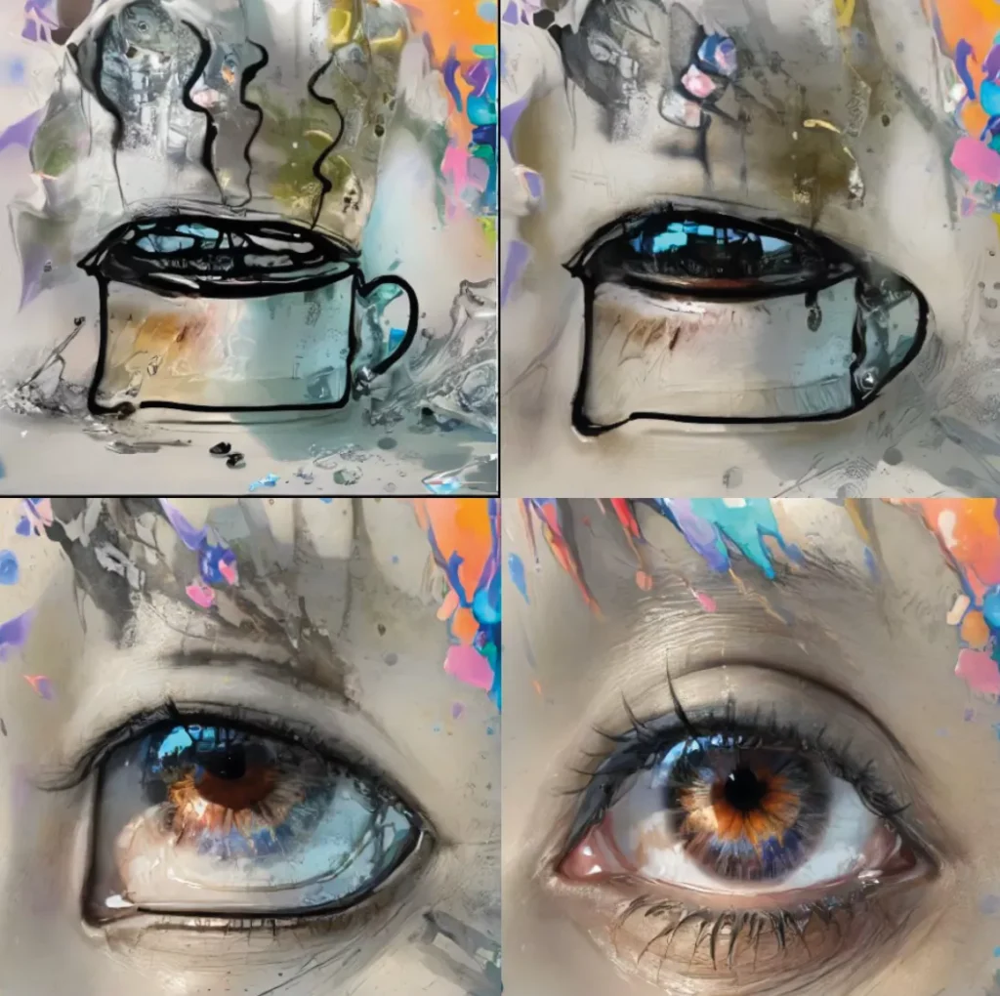

Im Praxisforum sollen aktuelle Diskurse und Forschungsfragen mit der Lehrtätigkeit im Fach Bildnerisches Gestalten an den Mittelschulen verknüpft werden. Die kostenfreie Veranstaltung richtet sich an Lehrpersonen und Alumni. Das diesjährige Forum befasst sich mit verschiedenen Fragen zur Rolle des Internets in Bezug auf Bildprozesse: Welche Bedeutung kommt einem Bild in unserer aktuellen Lebenswelt zu? Woher kommt es, was bewirkt es? Was bedeutet es, heutzutage ein Bild zu schaffen und in die digitale Flut loszulassen? Wie unterscheiden sich Bildprozesse, die vom Internet beeinflusst werden von solchen, die das Internet meiden? Wie soll das Internet als künstlerisches Recherche-Tool im Unterricht genutzt
Im Praxisforum sollen aktuelle Diskurse und Forschungsfragen mit der Lehrtätigkeit im Fach Bildnerisches Gestalten an den Mittelschulen verknüpft werden. Die kostenfreie Veranstaltung richtet sich an Lehrpersonen und Alumni. Das diesjährige Forum befasst sich mit verschiedenen Fragen zur Rolle des Internets in Bezug auf Bildprozesse: Welche Bedeutung kommt einem Bild in unserer aktuellen Lebenswelt zu? Woher kommt es, was bewirkt es? Was bedeutet es, heutzutage ein Bild zu schaffen und in die digitale Flut loszulassen? Wie unterscheiden sich Bildprozesse, die vom Internet beeinflusst werden von solchen, die das Internet meiden? Wie soll das Internet als künstlerisches Recherche-Tool im Unterricht genutzt
4. Praxisforum Kunstpädagogik
Das 4. Praxisforum knüpft an die Veranstaltung des 3. Praxisforums an, in der wir uns mit dem Internet als Quelle für Bildvorlagen und deren zeichnerischen Umsetzungen beschäftigt haben. Künstliche Intelligenz (KI) im Kontext von Kunst, Bild und Kunstpädagogik ist jetzt das Thema der beiden Weiterbildungsanlässe. Zunächst werden die theoretischen und technischen Hintergründe von KI und Bild behandelt, gefolgt von einer praktischen Vertiefung mit KI-Bildgeneratoren in einer zweiten Veranstlatung.

4. Forum
Künstler*innen nutzen und thematisieren KI seit längerem auf unterschiedliche Weise und konfrontieren uns mit ihrer utopischen und gleichzeitig dystopischen Dimension. Die kommende Weiterbildung will einen praktischen und theoretischen Zugang zu den gängigen KI Bildgeneratoren ermöglichen und damit die Grundlage schaffen, um künstliche Intelligenz kunstpädagogisch reflekieren zu können. Es soll darum gehen, das kunstpädagogische Potential von KI zu erkennen und zu überprüfen, damit wir ihr sinnvoll im Unterricht begegnen und sie entsprechend einsetzen können.

Fotografie eines auf Rollschuhen tanzenden Suppeneintopfes in einem Schwimmbad
Workshop
Geleitet von Fabienne Lengweiler
Im Workshop ging es darum, den Umgang mit der bildgenerativen KI zu erlernen und anzuwenden. Dazu gab Luca Schaffer einen kleinen Einblick in ethische Aspekte von Datenbanken, sowie in die Funktionsweise von sogenannten Prompts. Datenbanken beinhalten etliche Bilder aus dem Netz, die aber nicht ansatzweise den eigentlichen Bildbestand repräsentieren. Dies kann dazu führen, dass Datenbanken, aber auch Algorithmen Bias aufweisen können. Die Bilder in den Datenbanken werden jeweils von Menschen mit verschiedenen Tags versehen. Diese Tags werden mit der Texteingabe – also dem Prompt – aufgerufen und zu einem Bild generiert. Wie das Prompting genau funktioniert und welche alternativen Möglichkeiten die bildgenerative KI bietet, erklärte Fabienne Lengweiler.
Text-to-Image funktioniert anhand des Prompts. Beim Prompten ist es wichtig sich zu überlegen, welche Tags am ehesten auf das Wunschergebnis zutreffen und wie diese dann in einen Satz verpackt werden könnten. Es bietet ausserdem die Möglichkeit ein bestehendes Bild zu verändern, oder zu erweitern.
Ein Unterrichtsprojekt aus einer 4. Klasse an einem Langzeitgymnasium diente als Beispiel. Die Aufgabe bestand darin, einen nächtlichen Traum in einer digitalen Collage anhand von mindestens 4 Bildausgaben durch die KI zu einer Szene oder Geschichte zusammenzustellen. Es wurde dabei mit Adobe Firefly gearbeitet. Die SuS erlernten nach und nach die Funktionsweise der bildgenerativen KI und diskutierten über Vor- und Nachteile der Benutzung. Sie experimentierten mit unterschiedlichen Beschreibungen ihrer Vorstellungen bis sie zu den Ergebnissen gelangten, die ihnen entsprachen. Dazu nutzten sie verschiedene Stile und Referenzen. Die Bildausgaben setzten sie dann in Photoshop zu einem Gesamtwerk zusammen.
Image-to-Image verlangt keine textbasierten Prompts, sondern funktioniert anhand einer eigenen Bildeingabe. Es eignet sich deshalb für die Weiterverarbeitung eigener Bilder, oder auch um in einen Dialog mit der KI zu treten und seriell zu arbeiten.
Wichtig ist: Jede bildgenerative KI generiert unterschiedliche Bilder aufgrund von verschiedenen Datenbanken, Algorithmen und Software-Entwickler*innen. Beim Prompten gilt es einiges zu beachten, denn unklare, oder widersprüchliche Aussagen kann die KI nicht so verarbeiten, wie es vielleicht gewünscht ist. Deshalb kann man sich an eine grobe Abfolge halten, die es einem erleichtert, den richtigen Prompt zu formulieren. Zuerst nennt man den gewünschten Stil des Bildes, z.B. Eine Fotografie von…. Im zweiten Schritt wird der Inhalt erwähnt, z.B. Eine Fotografie einer Suppe…. Anschliessend können Details hinzugefügt werden, z.B. Eine Fotografie einer pinken Suppe mit einer Sonnenblume…. Vielleicht gibt es auch ein paar Details zum Stil, z.B. Eine Fotografie einer pinken Suppe mit einer Sonnenblume in schillernden Farben…. Und zum Schluss kann auch die Komposition des Bildes erwähnt werden, z.B. Eine Fotografie einer pinken Suppe mit einer Sonnenblume in schillernden Farben aus der Vogelperspektive.
Prompten will geübt sein, deshalb kann man anfangs durchaus Prompts von anderen Werken kopieren und verändern, oder KI-Textgeneratoren und Zufallswörter einsetzen. Auch Bildbeschreibungen, Namen von Kunstschaffenden und verschiedene Epochen können als Input dienen. Wichtig ist, dass die Prompts kurz gehalten werden, aber mehr als 3 Wörter beinhalten.
Nach der Workshop-Einführung konnten die Teilnehmenden mit Adobe Firefly / Photoshop, Leonardo Ai und mage.space selbstständig arbeiten und experimentieren. Wer Lust hatte, konnte sich dem Oberthema Eintopf / ein Topf / eintopfen / eingetopft widmen und dies dann auf ein Padlet hochladen.

Eine Fotografie eines galoppierenden Suppentopfs mit perlmuttfarbenen Tentakeln
Hier einige bildgenerative KI’s, die für den Unterricht relevant sein können:
Dall-e von OpenAI erfordert eine Anmeldung und ist seit April 2024 mit ChatGPT in einem Abo enthalten. Es ermöglicht Text-to-Image, Bilderweiterung und /-veränderung und Image-to-Image.
mage.space kann kostenlos genutzt werden und erfordert nach einiger Zeit eine Anmeldung. Es beherrscht Text-to-Image und Bildveränderung. Modelle und Einstellungen sind anpassbar.
Adobe KI ist in der Creative Cloud enthalten. Adobe Firefly kann Text-to-Image und bietet auch die Möglichkeit mit Referenzbildern zu arbeiten. Mit Photoshop ist ausserdem die Bilderweiterung und Bildveränderung möglich.
Leonardo AI erfordert eine Anmeldung und bietet 150 kostenfreie Credits pro Tag. Es ermöglicht Text-to- Image, Bilderweiterung und Bildveränderung, Zeichnung zu Bild, Live-Prompting und einfache Animationen. Modelle und Einstellungen sind anpassbar.
Text: Fabienne Lengweiler

Eine gehäckelte Skulptur einer Rindsgulaschsuppe
Vor dem Workshop haben wir vier Fragen in den Raum gestellt, welche man sich während der praktischen Auseinandersetzung mit den KI-Tools im Hinterkopf behalten konnte, damit sie anschliessend in vier Gruppen vertieft diskutiert werden konnten. Die Ergebnisse der Diskussionen wurden anschliessend zusammengefasst.
1) Welche fachlichen / überfachlichen Kompetenzen können und sollen wir angesichts von KI fördern bzw. beurteilen?
Zusammenfassung der Diskussion:
Verständnis für: Datenbanken, Algorithmen hinter der Bildgenerierung, die Frage nach Authentizität.
Fördert das Vorstellungsvermögen, das präzise Formulieren, das eigene Beurteilen (Vergleich Ergebnis mit der Vorstellung), die KI als ein Werkzeug zu begreifen, den Umgang mit dem Werkzeug und die Ermächtigung kritisch damit umzugehen.
Praktischer Einsatz: KI als Spiegel der eigenen Produktionen verwenden, verschiedene Einsatzformen erproben, Stile anhand von KI-generierten Bildern untersuchen, Werkzeug um auf neue Ideen zu kommen.
Generelle Fragen: Was soll mit einem Prompt erreicht werden? Die Limitation des Werkzeugs schafft ein Bewusstsein dafür, was eben fehlt oder gesucht wird. Wie lange dauert es, bis man sich an die Ästhetik der KI Bilder gewöhnt hat und eine anfängliche Begeisterung etwas abflacht? Wie intelligent muss ein Werkzeug sein?
2) Welche Fragen stellen sich bezüglich Autor:innenschaft von KI – generierten Bildern?
Zusammenfassung der Diskussion:
Wir sind zum Ergebnis gekommen, dass man nur Autor*in von einer Eigenleistung sein kann. Deshalb muss man beim Einsatz von bildgenerierender Software im Unterricht eine klare Vorstellung davon haben, über welche Kompetenzen die SuS verfügen (vor und nach dem Projekt) und welche Eigenleistungen sie erbringen sollen. Wir haben auch festgestellt, dass die verschiedenen Fragestellungen zusammenhängen (Kompetenzen – Eigenleistung – Autorschaft). Auf den Aspekt von kollektiver Autorschaft (Bilder werden von der Maschine auf der Basis von bestehenden Bildern generiert und diese werden wieder verwendet, bearbeitet und wieder ins Netz gespiesen usw.) sind wir gar nicht zu sprechen gekommen.
3) Wie kann man mit inhaltlichen und formalen Stereotypen umgehen? Wie erkennt man sie? Wie können sie in Lehr-/ Lernsituationen thematisiert werden?
Zusammenfassung der Diskussion:
Eine Frage wurde direkt aufgeworfen: Was macht es mit den Jugendlichen, wenn sie solchen Stereotypen gegenüberstehen? Oder sogar: Was ist wenn ich das Stereotype bin? Jugendliche sind generell eh schon vielen Stereotypen gegenüber gestellt und verfolgen diese auch aktiv. Wie kann man solche durchbrechen / auflösen? Wie erkennt man sie? Menschen vergleichen… Was passiert zum Beispiel alleine schon bei Familienbildern? Mann, Frau, Kind… Wenn man aber eine Familie zeichnen würde, würde man sie wahrscheinlich auch so zeichnen. Problematisch ist nur, dass man andere Familienbilder gar nicht zu sehen bekommt. Man soll das Formulieren lernen, damit sowas nicht entsteht! Man muss es immer thematisieren! Prompten ist ein Prozess, meistens merkt man erst beim Machen was man eigentlich will. Könnte man eine eigene Datenbank anlegen? – Ja, aber bekannt ist nur Stable Diffusion, da braucht es einen guten Rechner. Nicht auf den SuS-Laptops möglich. Aber man könnte vielleicht als LP eine erstellen?
4) Wie geht man mit ethischen und moralischen Einschränkungen des Modells um? Wie beeinflussen diese Limitationen den individuellen Gestaltungsprozess?
Ergebnis der Diskussion:
Die Frage zielt auf modellseitige Einschränkungen ab, welche moralisch und ethisch nicht erwünschte Eingaben und/oder Ausgaben filtern. Dazu dienen Techniken, wie etwas, das Filtern der Trainingsdaten, das Blockieren und Umformulieren von Eingaben (Prompts), oder das Bevorzugen gewisser Ausgaben, um Bias (Verzerrungen) der vorhandenen Trainingsdaten zu reduzieren.
In der Diskussion stellte sich rasch die Frage, an welchen Punkten gestalterische Entscheidungen getroffen werden können, wie etwa dem Prompten oder der Auswahl von den Bildern. Als weiteres gestalterisches Moment wurde die Collage mehrerer Ausgaben thematisiert, um Komposition und Inhalt bewusst zu beeinflussen. Wobei dadurch auch das je nach Tool standardisierte Bildformat angepasst werden kann.
Die KI wurde, insbesondere bei Sprachmodellen, als Sparringpartner thematisiert und nach Möglichkeiten auch im visuellen mit der KI in einen «Dialog» zu treten.
Die Sprachlichkeit der Inputs könnte die Kompetenz, visuelle Ereignisse präzise zu verbalisieren, fördern. Andererseits sind die Unterschiede einer verbalen oder visuellen Kommunikation kaum einzuebnen, und daher der Möglichkeitsraum mit sprachlichen Eingaben eingeschränkt.
Während des Workshops erschienen die Outputs als angeglichen und konform. Dies wurde aufgrund der damit einhergehenden kleineren Entscheidungsfreiheit negativ gewertet. Dahingegen konnte bei SuS beobachtet werden, dass aufgrund inflationär genutzten Selfies im Alltag Formen der Selbstinszenierung eingeübt werden und sich dies im Gestaltungsunterricht positiv auf die Bildkompetenz auswirke. So könnten Bildgeneratoren auch zu einem gesteigerten Bewusstsein führen.
Zuletzt bestand der Eindruck, dass die Modelle, sobald sie visuell eine Richtung eingeschlagen haben, diese weiter verfolgen.

Skizze eines Eintopfs wird von der AI zum Augea pot from which eyes are growing in a worms eye view
Kunstpädagogische Einordnung
KI-basierte Bildgeneratoren können in einem bild- und produktorientierten Unterricht eine Rolle spielen. Sie können aber auch in einem künstlerischen Prozess dazu dienen, Entwürfe und Vorlagen zu erstellen, die anschliessend in einer anderen medialen Form weiterverarbeitet werden. Handwerkliche Aspekte der Bildproduktion werden der KI übergeben und die zu erarbeitenden Kompenzen sind hauptsächlich sprachlicher und konzeptioneller Natur. Ausserdem können durch die Auseinandersetzung mit KI-erstellten Bildern wichtige bild- und stilanalytische Kenntnisse erworben werden. Der Workshop hat aber gezeigt, dass die Resultate sehr stark von der gezielten Formulierung des Prompts und von den Bilddatenbanken abhängen, auf welche die KI zugreifen können. Selbst bei geübtem Umgang mit Prompts, sind die KI- generierten Bilder fast immer sofort als solche erkennbar. Stilistische und ikonografische Stereotypen beherrschen den Gesamteindruck der Bilder. Die Schüler*innen sind vielleicht zu Beginn begeistert von der handwerklichen Perfektion der Umsetzungen ihrer Prompts. Im Unterricht sollte es aber darum gehen, die Grenzen der unpersönlichen, aalglatten Darstellungen und der ihr zugrunde liegenden Bilddatenbanken zu erkennen – dies ganz im Sinne eines reflektierten Umgangs mit KI- generierten Bildern und einer bewussten Rezeptions- und Produktionsästhetik. Das könnte schliesslich auch dazu führen, dass die Qualität der eigenen, ganz persönlichen handwerklichen Imperfektion erkannt, anders wahrgenommen und geschätzt wird. Diese Erkenntnis zu ermöglichen, gehört zu einem zentralen Ziel einer differenziellen Kunstpädagogik.
KI-generierte Bilder haben aber neben der Anmut von Automatenkunst auch inhaltlich einen Hang zu Voreingenommenheit und Stereotypen. Das liegt daran, dass zum Beispiel weit verbreitete rassistische und sexistische Bildmuster von den Algorithmen nicht als solche erkannt und deshalb ständig reproduziert werden. Es können verhängnisvolle Vereinheitlichungstenzen sichtbar werden, die im Unterricht erkannt und reflektiert werden müssen.
Gelbes Schwein im Topf im Magritte-Stil
Die Nutzung von KI basierten Bildgeneratoren verlangt deshalb eine künstlerische Mentalität im gesamten Produktionsprozess, die nicht von Affirmation dominiert ist. Das bedeutet, dass wir im Unterricht einerseits die technischen und handwerklichen Voraussetzungen der Bildproduktion schaffen müssen, aber andererseits sollten wir auch den Raum dafür bieten, dass die Schüler*innen ihre mentalen und konzeptionellen Dispositionen erweitern können. Dann wird es auch möglich, dass KI in der Bildproduktion kreativ genutzt werden kann und dass sie einen Beitrag dazu leisten kann, Medienkompetenzen sowohl in der Rezeption als auch in der Produktion zu erarbeiten.